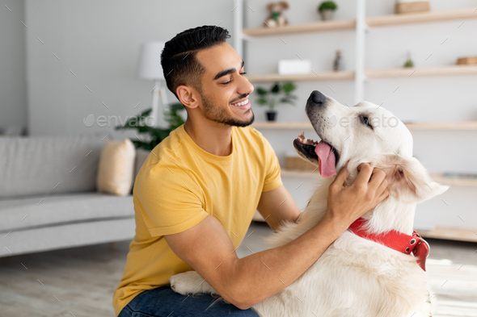

Целта на проекта "PetsAdopters" е да набере
осиновители на животни в нужда. Животните могат
да бъдат осиновявани от частни лица и от
организации (например учебни институции).
В този сайт ще разберете какво е
осиновител и какви са условията
за кандидатстване.
Научете още...
Какви са общите условия за кандидатстване?
- Стабилен доход
- Място за живеене
- Любов за животните
Това е всичко, от което се нуждаете
за да помогнете!

ТОВА Е УЧЕНИЧЕСКИ ПРОЕКТ. САЙТЪТ НЕ РЕАЛЕН